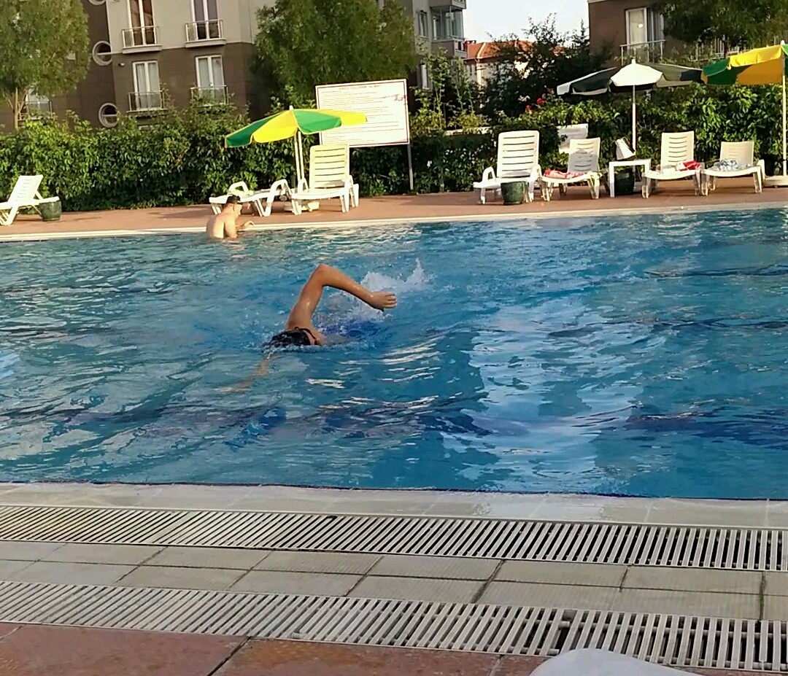
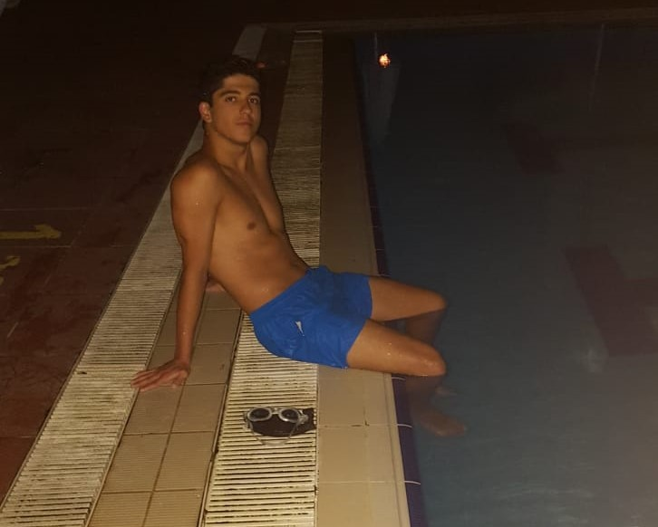

Everything about swimming started with an idea from my dad when I'm 10 years old. He said he could send me to a swimming course. I accepted directly and went there for a month. I learned freestyle swimming there.
We moved to a site that have a pool. I always tried to improve myself in swimming as in other sports branches.
I started learning new styles like butterfly after developing myself in freestyle swimming.
After learning swimming styles and developing myself in these styles, I realize that I should use this effort somewhere. Then I heard about some races namely Samsung Bosphorus Cross-Continental Swimming Race and Çanakkale Cross-Continental Swimming Race. Now I'm getting ready from morning till evening during summer and winter for these races. I can't wait to swim in these competitions
You can click the links below for details about my sport experiences or return to start of the journey.
Start of The Journey